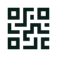

11-MAVZU · BIZNESNI RAQAMLI BOSHQARISH
Moliyaviy inklyuziya va raqamli bank xizmatlari
Raximov GʻanisherFan: Biznesni raqamli boshqarish
Reja
- 01Moliyaviy inklyuziya: tushuncha va oʻlchovlar
- 02Dunyo raqamlarda
- 03Raqamli bank xizmatlari turlari
- 04Oʻzbekiston: huquqiy asos va natijalar
- 05Sanoat korxonalari uchun ahamiyati
- 06Toʻsiqlar, xavflar va xulosa
- 07Savol-javob: mavzuni mustahkamlash
Hamyoningiz ham, bank kartangiz ham uyda qolib ketdi. Bugungi kunni telefonning oʻzi bilan oʻtkaza olasizmi?
- Kimda kamida bitta bank kartasi bor?0
- Kim bugun telefon orqali toʻlov qildi yoki pul oʻtkazdi?0
- Kim oxirgi bir haftada umuman naqd pul ishlatmadi?0
Javoblarni sanab, + tugmasi bilan yozib boring. Keyin videoni koʻramiz.
Avval koʻramiz, keyin muhokama qilamiz
Video fayli hali qoʻyilmagan. Faylni html/assets/mi/video.mp4 nomi bilan saqlang yoki hozir tanlang:
Moliyaviy inklyuziya: 4 ta asosiy xizmatdan foydalana olish
Jismoniy shaxslar va bizneslar oʻz ehtiyojiga mos, arzon va masʼuliyat bilan taqdim etiladigan moliyaviy xizmatlardan foydalana olishi.
Inklyuziya 4 oʻlchovda baholanadi
Xizmat yaqin va arzonmi?
Qanchalik muntazam ishlatiladi?
Xizmat ehtiyojga mosmi?
Hayot sifati yaxshilandimi?
Manba: Alliance for Financial Inclusion (AFI), Core Set of Financial Inclusion Indicators
Dunyoda kattalarning 79 % hisob raqamiga ega
79 %
kattalar hisob raqamiga ega (2024)1,3 mlrd
kattaning hisob raqami yoʻq86 %
kattalar mobil telefonga egaHisob raqamiga ega kattalar, dunyo
Manba: World Bank, The Global Findex Database 2025 (2024-yil maʼlumoti)
Kattalarning 61 % raqamli toʻlov qilgan yoki qabul qilgan
Past va oʻrta daromadli mamlakatlar, 2024
Manba: World Bank, The Global Findex Database 2025
Raqamli bank xizmatlarining 7 turi
- Mobil va internet-banking
- Elektron hamyon
- P2P oʻtkazmalar

QR-toʻlov- Raqamli (neo)banklar
- Onlayn kredit va mikroqarz
- Masofaviy identifikatsiya
Raqamli bank arzonroq va qulayroq, ammo kiberxavfli
| Anʼanaviy bank | Raqamli bank | |
|---|---|---|
| Filial | Zarur | Shart emas |
| Ish vaqti | Belgilangan soatlar | 24/7 |
| Xizmat narxi | Yuqoriroq | Pastroq |
| Hisob ochish | Filialda | Masofadan, tez |
| Qamrov | Shahar markazlari | Internet bor joyda |
| Xavflar | Navbat, naqd pul | Kiberfiribgarlik |
Raqamli moliyaning huquqiy asosi: 2019–2026
2019
«Toʻlovlar va toʻlov tizimlari toʻgʻrisida»gi QonunHuquqiy baza2020
«Raqamli Oʻzbekiston — 2030» strategiyasiPF-6079, 05.10.20202021–2023
Moliyaviy xizmatlar ommabopligini oshirish strategiyasiMarkaziy bank, Jahon banki2026
Moliyaviy texnologiyalarni rivojlantirish strategiyasi2026–2030, Markaziy bank, PQ-359
Oʻzbekistonda hisob egalari ulushi 34 % dan 56 % ga oʻsdi
Global Findex, kattalar ulushi20172024
- Hisob raqamiga ega kattalar34 %→56 %
- Ayollar orasida28 %→50 %
- Mobil pul foydalanuvchilari5 %→24 %
75,7 mln
▲ 01.01.2026: 68,3 mln47 ming
01.08.2026 (01.01.2026: 40,1 ming)Manba: World Bank, The Global Findex Database 2025; Oʻzbekiston Respublikasi Markaziy banki (01.01.2026, 01.08.2026)
Raqamli moliya sanoat korxonasiga 5 ta afzallik beradi
Beshta toʻsiq inklyuziyani sekinlashtiradi
- Moliyaviy savodxonlik pastligiXizmat va xavflarni tushunmaslikYuqori
- Bankka ishonchsizlikNaqd pulni afzal koʻrishOʻrta
- Qishloqda infratuzilma yetishmasligiBankomat va internet kamroqOʻrta
- Gender tafovutiAyollarda hisob ulushi 50 %, umumiy 56 %Oʻrta
- KiberfiribgarlikIjtimoiy muhandislik, soxta xabarlarYuqori
Xavf darajasi: muallifning sifat bahosi. Gender maʼlumoti: Global Findex 2025 (2024-yil)
Xavflarni tartibga solish va himoya choralari kamaytiradi
Xavflar 3
- Firibgarlik va ijtimoiy muhandislik
- Shaxsiy maʼlumotlar himoyasi
- Ortiqcha qarzdorlik
Choralar 4
- Isteʼmolchilar huquqini himoya qilish
- Regulyativ «qum maydoni» (sandbox)
- Ikki bosqichli tasdiqlash
- Moliyaviy savodxonlik dasturlari
Xulosa va takliflar
01Xulosa
Raqamli kanallar moliyaviy inklyuziyani tezlashtirmoqda
56 %
hisob egalari, Oʻzbekiston, 2024(2017‑yilda 34 %)
03Taklif
KOB uchun skoring va taʼminot zanjiri moliyasini kengaytirish
02Taklif
Ayollar va qishloq aholisi uchun tafovutni qisqartirish
04Taklif
Kiberxavfsizlik va moliyaviy savodxonlikka sarmoya kiritish
Savol-javob: bugun nimani oʻrgandik?
Avval tinglovchilar javob beradi, keyin kartani bosib tekshiramiz.
Eʼtiboringiz uchun rahmat!
Raximov Gʻanisher · Fan: Biznesni raqamli boshqarish
Foydalanilgan adabiyotlar
- World Bank. The Global Findex Database 2025: Connectivity and Financial Inclusion in the Digital Economy.
- Oʻzbekiston Respublikasi Markaziy banki statistik maʼlumotlari (01.01.2026 va 01.08.2026 holatiga).
- «Toʻlovlar va toʻlov tizimlari toʻgʻrisida»gi Oʻzbekiston Respublikasi Qonuni, 2019.
- «Raqamli Oʻzbekiston — 2030» strategiyasi, PF-6079, 05.10.2020.
- 2021–2023-yillarga moʻljallangan Moliyaviy xizmatlar ommabopligini oshirish milliy strategiyasi, Oʻzbekiston Respublikasi Markaziy banki.
- 2026–2030-yillarga moʻljallangan Moliyaviy texnologiyalar sohasini rivojlantirish milliy strategiyasi, Oʻzbekiston Respublikasi Markaziy banki (PQ-359 asosida).
- Alliance for Financial Inclusion (AFI). Core Set of Financial Inclusion Indicators.